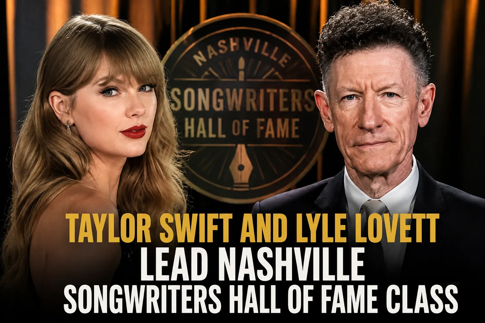

Taylor Swift and Lyle Lovett Lead Nashville Songwriters Hall of Fame Class
Music News
Published: Tuesday, August 12, 2026

Taylor Swift is set to receive another major career honor, this time alongside Lyle Lovett as part of the newest class of the Nashville Songwriters Hall of Fame.
The organization announced Tuesday that Swift, Lovett, Shawn Camp, Lee Thomas Miller and Bruce Channel will be inducted later this year at the 56th Anniversary Nashville Songwriters Hall of Fame Gala.
Swift will enter the Hall in the contemporary songwriter/artist category. Long before becoming one of the world's biggest pop stars, she established herself in Nashville as a young songwriter who frequently wrote or co-wrote the material that became her biggest hits.
Her early work included songs such as "Teardrops On My Guitar" and "Love Story." She later expanded beyond country music with massive hits including "Blank Space," "Anti-Hero" and "Cruel Summer."
The honor adds to a remarkable year for Swift's songwriting career. In June, she became the youngest woman to be inducted into the Songwriters Hall of Fame.
Lovett will be recognized in the veteran songwriter/artist category. His career has been defined by a distinctive combination of country, folk and Americana, with sharp lyrics becoming a signature of his music.
Some of Lovett's well-known songs include "She's No Lady," "Cowboy Man," "Give Back My Heart" and "God Will."
Shawn Camp will also be honored after making the transition from respected fiddle player to successful songwriter. During his early career, Camp performed with artists such as Shelby Lynne, Alan Jackson and Trisha Yearwood. He later wrote songs recorded by major country performers, including Garth Brooks, Brooks & Dunn and Willie Nelson.
Lee Thomas Miller's songwriting résumé includes numerous country radio favorites. His work includes Trace Adkins' "You're Gonna Miss This," Terri Clark's "I Just Wanna Be Mad," Tim McGraw's "Southern Girl" and Chris Stapleton's "Whiskey And You." Miller has also contributed songs to Brad Paisley's catalog.
Bruce Channel rounds out the 2026 class as the veteran songwriter. He is best known for writing "Hey! Baby!" in 1959. The song has been covered by numerous performers over the decades and became particularly recognizable to movie audiences after its memorable use in the 1987 film "Dirty Dancing."
The 2026 inductees were announced at Belmont University in Nashville by Nashville Songwriters Hall of Fame Executive Director Mark Ford.
Swift's induction represents another significant recognition for an artist whose career began in Nashville and grew into a worldwide songwriting phenomenon.